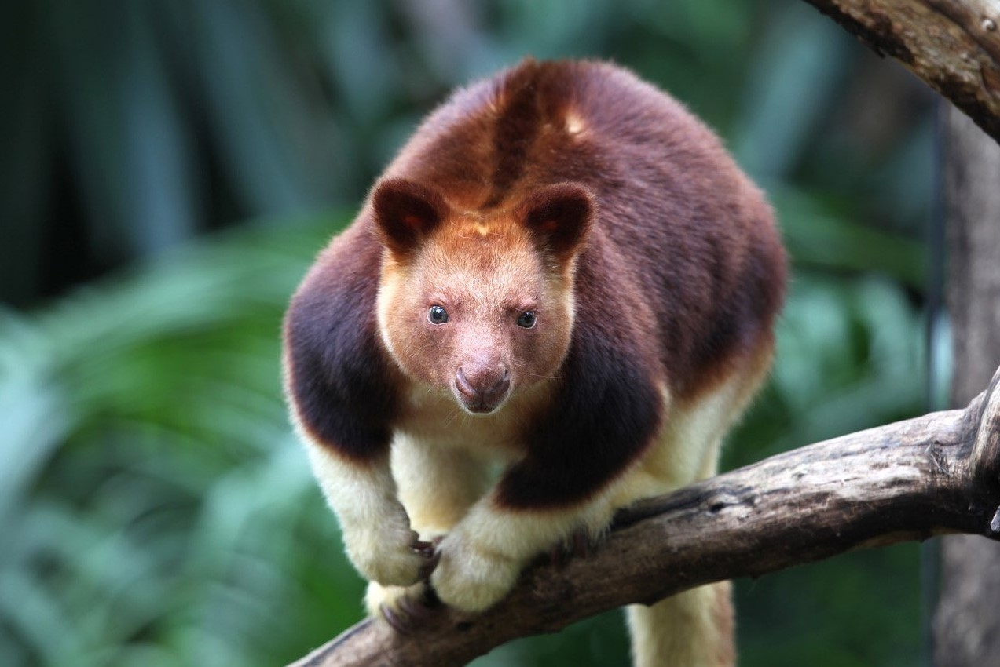
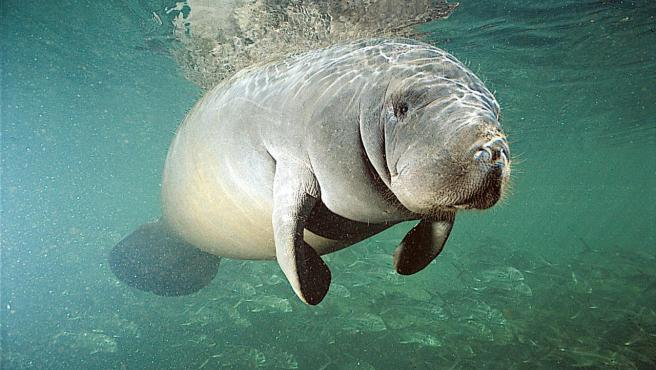
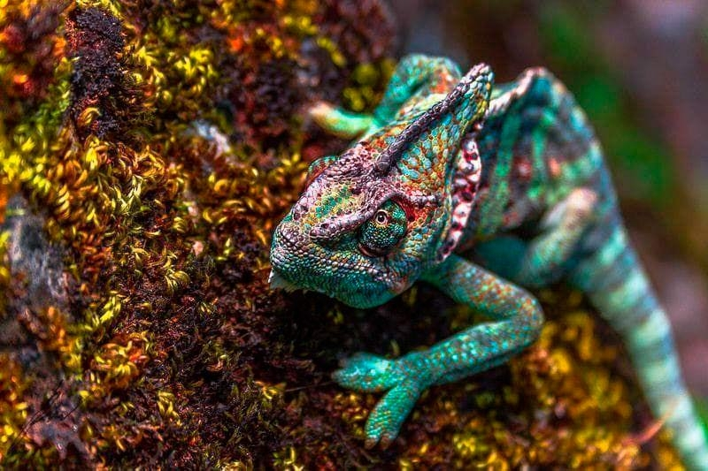
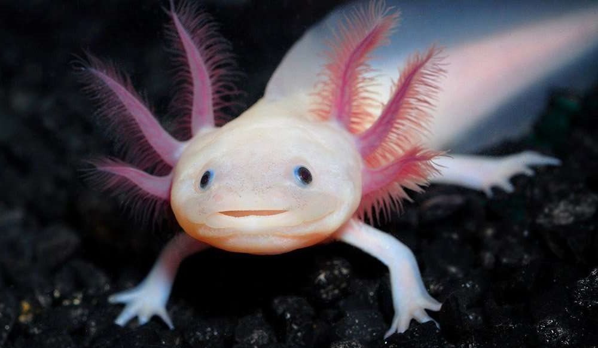
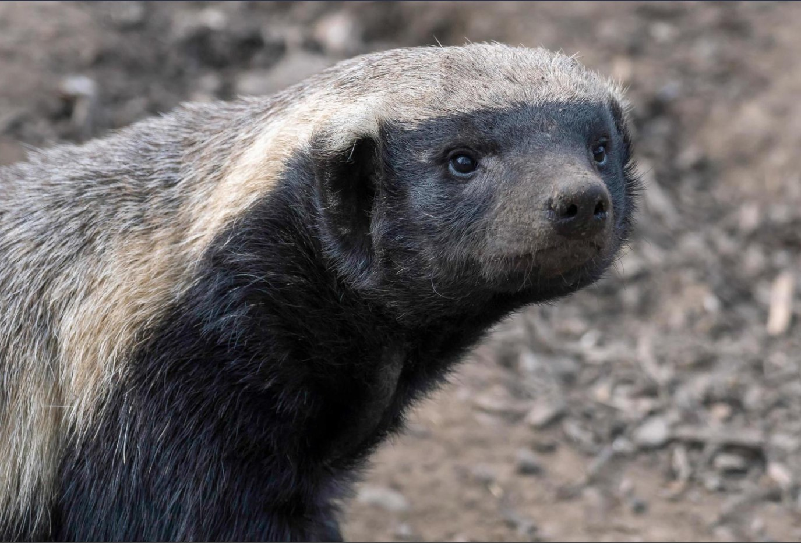
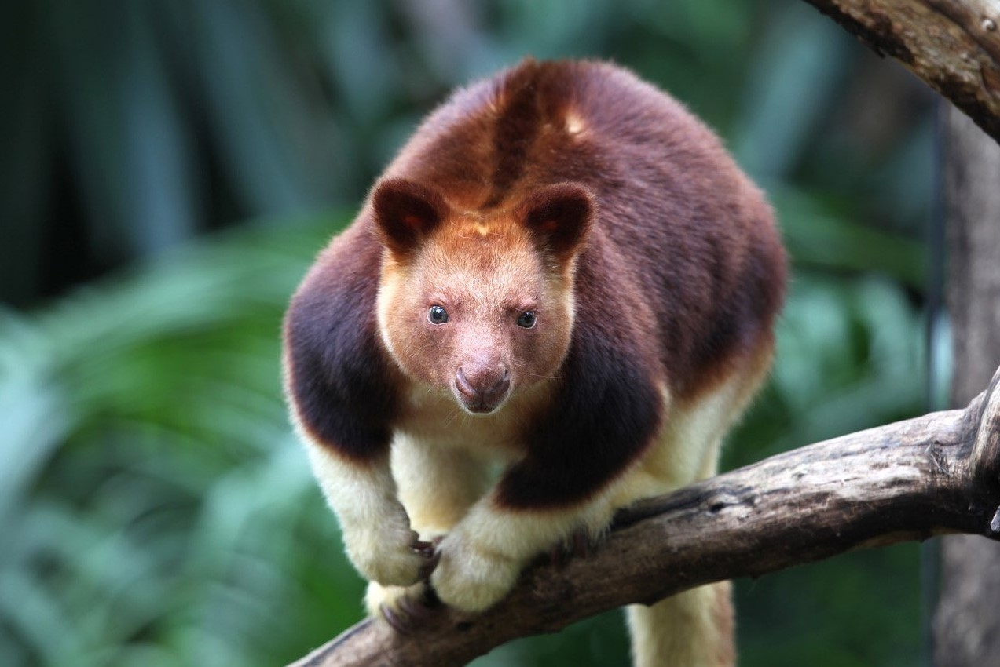
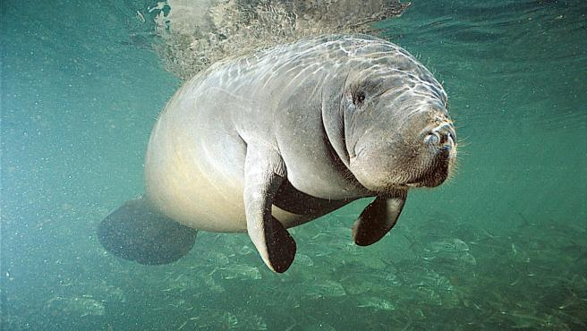
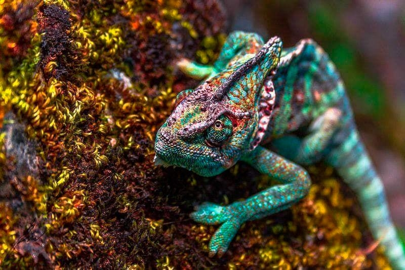
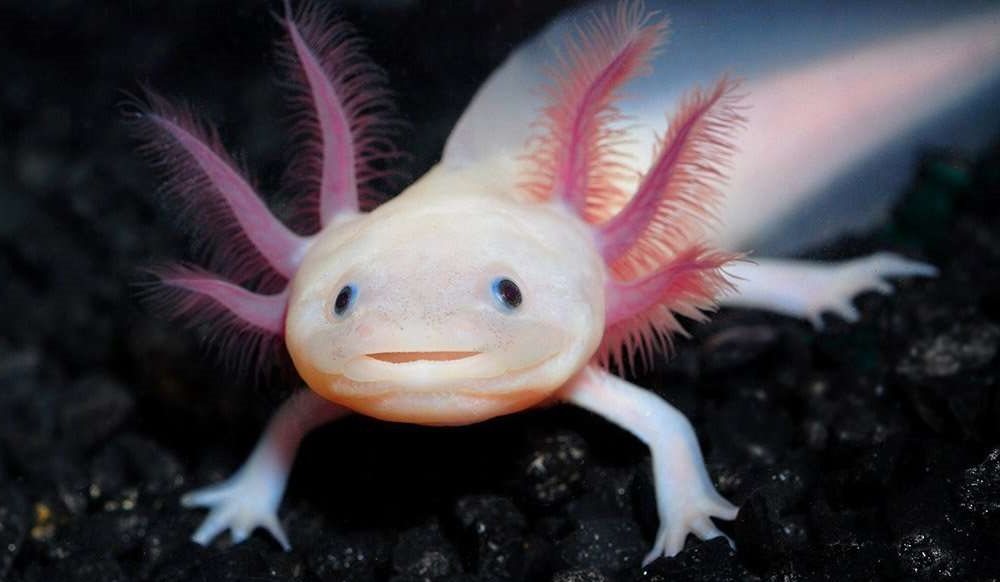
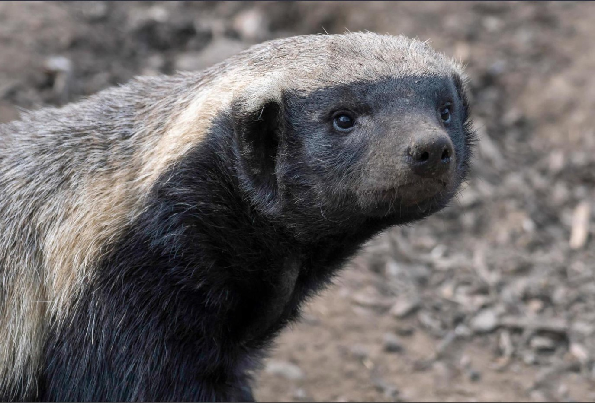

Algunas clases son:
1Mamíferos
Los mamíferos (Mammalia) son una clase de animales vertebrados amniotas homeotermos (de sangre caliente) que poseen glándulas mamarias productoras de leche con las que alimentan a las crías. La mayoría son vivíparos (con la excepción de los monotremas: ornitorrinco y equidnas.
2Mamíferos sirénidos
Los mamíferos marinos son un grupo variado de aproximadamente 130 especies de mamíferos que se han adaptado a la vida en el mar o dependen de él para su alimentación(ballenas, delfines, lobos marinos, focas, morsas, nutrias marinas, osos polares, manatíes y dugongos).
3Anfibios
Los anfibios son una clase de animales vertebrados anamniotas, tetrápodos, ectotérmicos, con respiración branquial durante la fase larvaria y pulmonar al alcanzar el estado adulto. A diferencia del resto de vertebrados, se distinguen por sufrir una transformación durante su desarrollo.
Imagenes
 










Algunas ramas de la zoologia son:
Herpetología

Ictiología